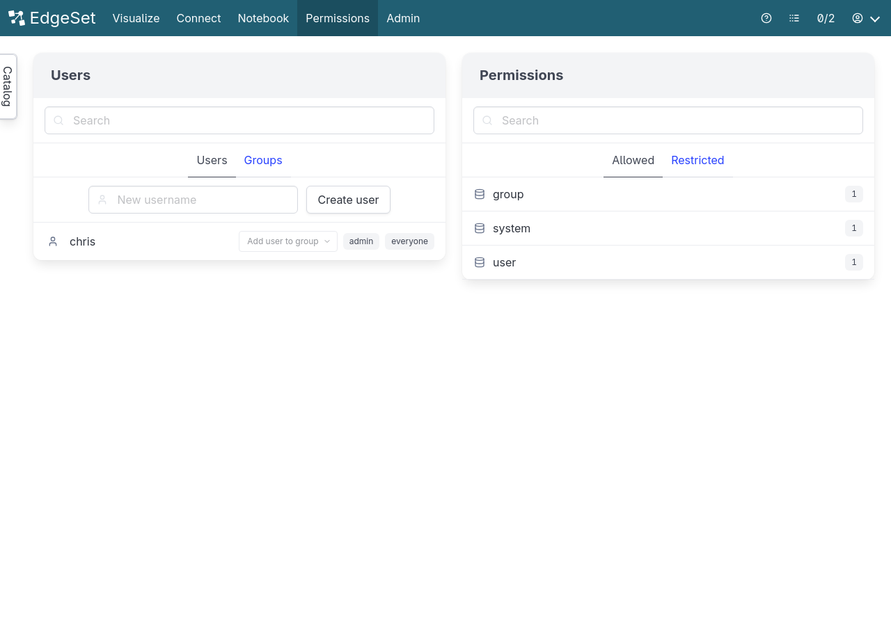
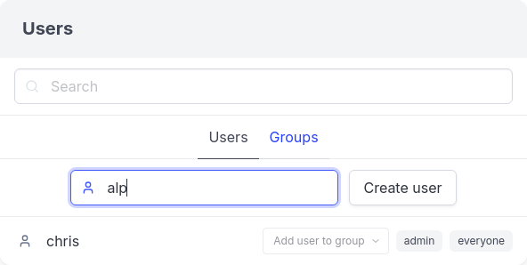
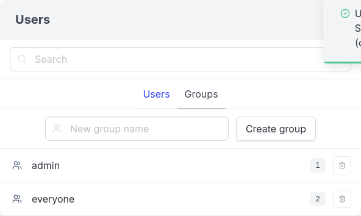
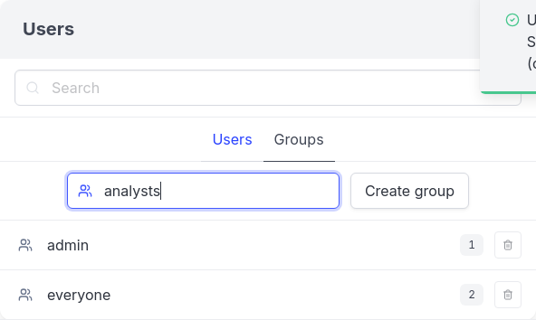
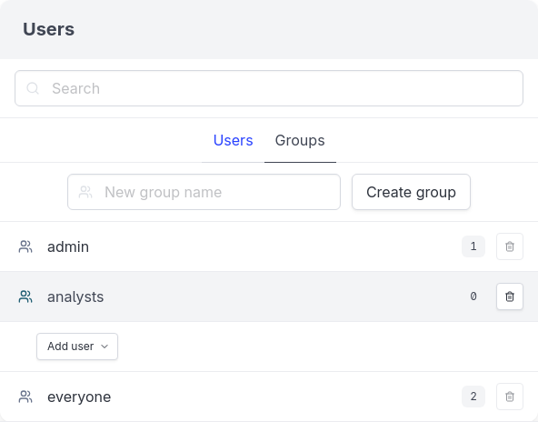

8 Users and Groups
EdgeSet is designed to be used by many people (and programs) in your organization. You should create a user not just for each person who will be using EdgeSet but also for any programs that will be accessing EdgeSet, such as cron jobs or other applications. Doing so will make it easier to assign appropriate permissions and track usage later.

8.1 Adding users
When creating users, you must assign a password (instead of using an existing single sign-on system). This is so that users can connect from other non-web [Clients].

Random and then Create user
8.2 Grouping users
Groups exist to make assigning permissions simpler, especially for large organizations (or for small organizations planning to grow).


Create group

1 to reflect the change